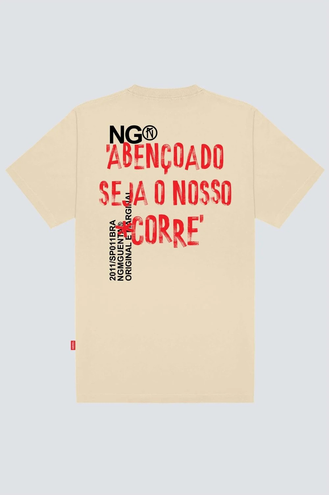
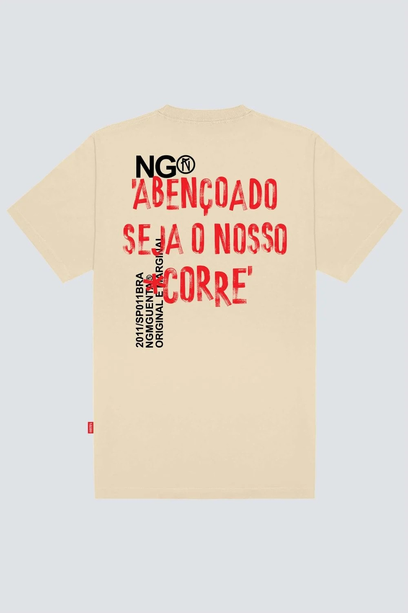
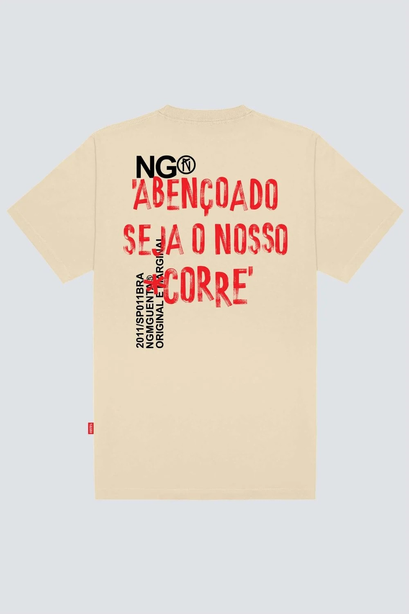

DROPP
Streetwear, Lifestyle, News
 

DROPP
Streetwear, Lifestyle, News

Streetwear culture is a fashion movement that emerged from the streets, particularly within urban subcultures like skateboarding and hip-hop, during the 1980s and 1990s.
With a laid-back style focused on comfort, streetwear is characterized by casual and practical clothing, such as sneakers, oversized t-shirts, hoodies, and baggy pants, often featuring bold logos,
graphics, and prints. Additionally, this style is deeply influenced by street art, graffiti, and music, especially rap and hip-hop, and carries a spirit of rebellion and individuality.
Many streetwear brands have become icons, such as Supreme, Off-White, and BAPE, whose limited-edition releases and exclusive collaborations create a sense of scarcity and desire among consumers.
Streetwear, however, is not just about clothing; it is also a form of cultural and social expression, reflecting the
values and attitudes of urban youth. The exclusivity of items, often released in limited-edition or collaborative drops, is a defining
characteristic of this universe. Streetwear brands understand that scarcity adds value, and they frequently "drop" (release) products that sell out quickly, fueling a culture of desire and the constant
search for items that become symbols of status and belonging.
In this context, online sales platforms like the store "Drop" stand out
for directly catering to the audience looking to engage with and connect to this culture. Drop’s concept is to offer a carefully
curated selection of streetwear brands and products, in line with the aesthetics and trends of the movement.
The name "Drop" itself refers to the common practice in streetwear, where collections and products are released in limited quantities, generating an appeal of exclusivity.
Thus, the site is not just a clothing store but also a meeting point for enthusiasts of this lifestyle, providing easy
access to sought-after pieces from renowned brands, as well as fresh releases and exclusive partnerships.
Moreover, Drop connects with the digital culture and social media, which are essential in streetwear marketing. Influencers and figures from the worlds
of music and urban art promote the clothing and trends, helping to solidify the relationship between consumers and the brand.
The convenience of being able to purchase these items from anywhere, combined with exclusivity and a sense of belonging, makes Drop an ideal platform
for those wanting to stay on top of the latest trends in this style, while remaining authentic and connected to the urban culture it represents.